Tolle(성경 통독) — 검수 결과
2026-10-06 · Flutter 1차 · 자동 테스트가 실제로 누른 기록 · 폰으로 해 보기
- 테스트 45개 전부 통과 — 엔진 24(1,189장·31,102절 합계, 연대순 1,189장 정확히 한 번, 15가지 계획 전부 매일 1장 이상·분량 균형, 밀림 조정, 서머타임 날짜) + 로봇 21
- 로봇: 서로 다른 버튼 35종 · 64번 누름 · 화면 71개 점검 · 스크린샷 47장 (잘린 글자·VoiceOver 로 못 누르는 버튼·한글 섞임 자동 검사)
- 기기 3종(iPhone 13 1170×2532 / SE / 15 Pro Max) × 라이트·다크 × 글씨 100%·135%
- 웹 실제 터치 점검 15/15 (헤드리스 크롬 폰 크기, 손가락 tap·세로 끌기, 콘솔 에러 0)
- 로봇이 잡아서 고친 것: 큰 글씨에서 "Psalms & Proverbs"·"Spread the Rest" 가 잘림 → 설명을 아랫줄로. 책이 둘인 날 큰 제목이 "2 / Samuel" 로 끊김(스크린샷에서 발견) → 책마다 한 줄.
- 확인 못 한 것: 실기기 햅틱 느낌, 아이폰 시스템 글꼴(SF) 렌더(웹·테스트는 Roboto), 실제 알림 도착, 진짜 광고(지금은 테스트 ID).
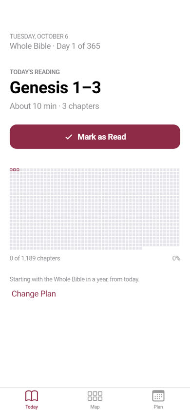
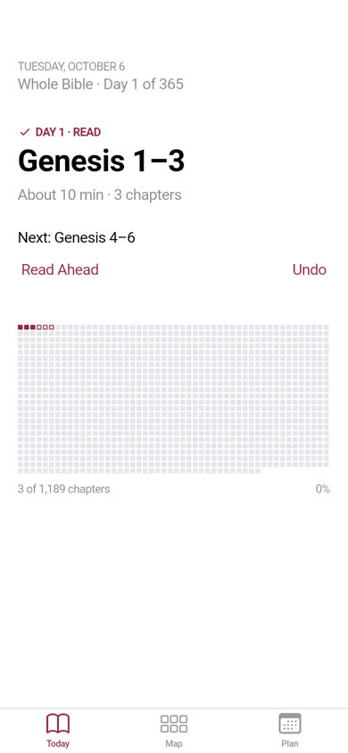
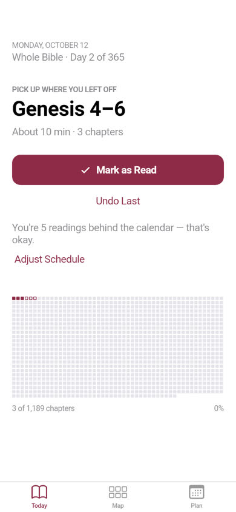
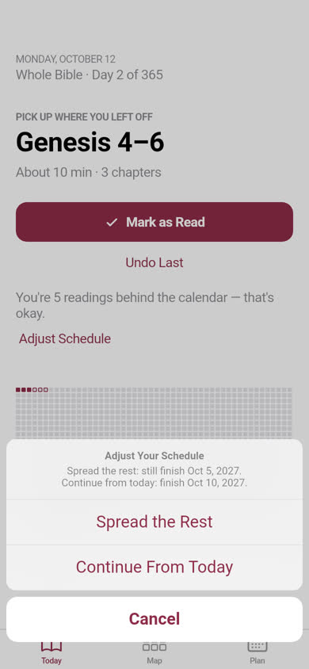
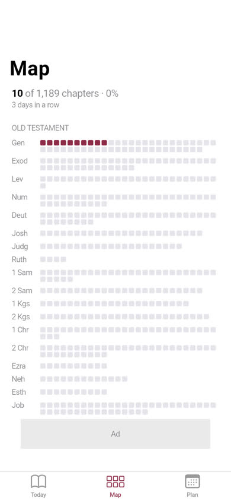
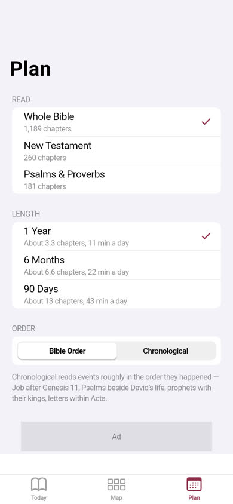
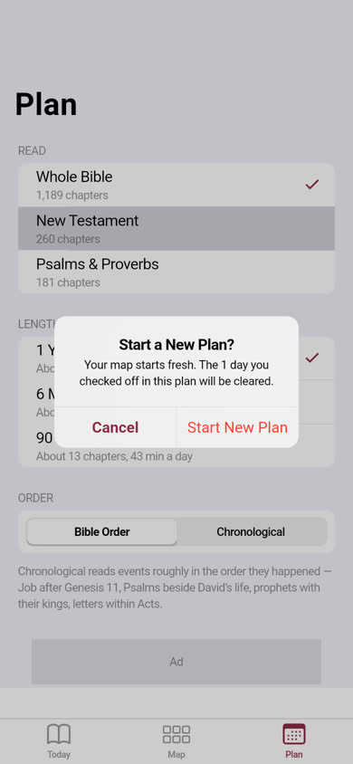
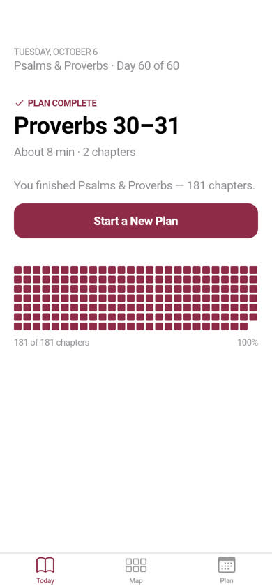
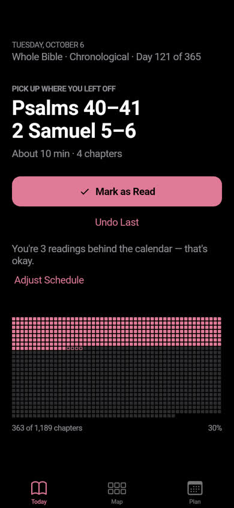
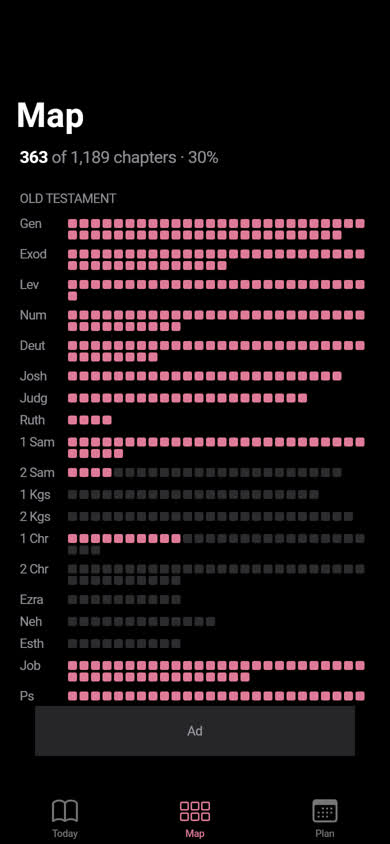
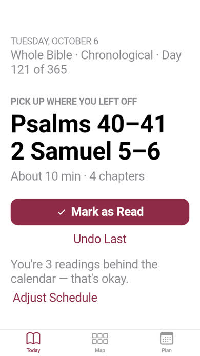
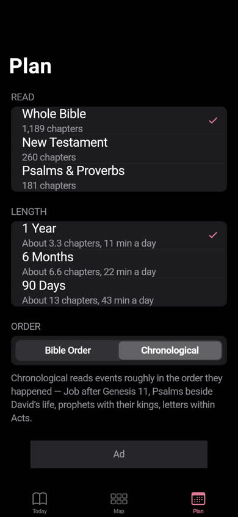
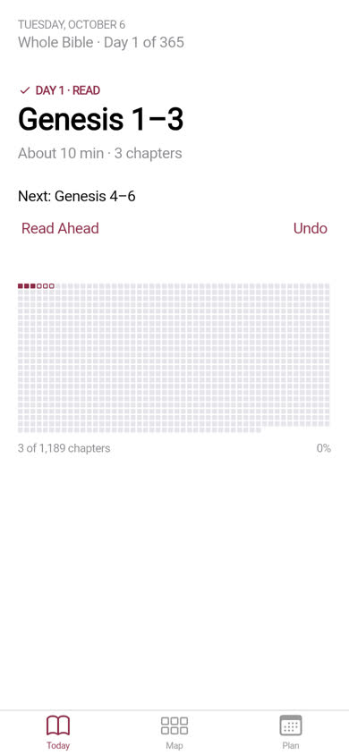
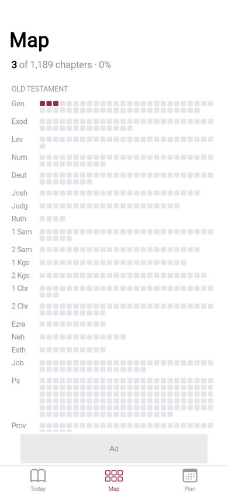
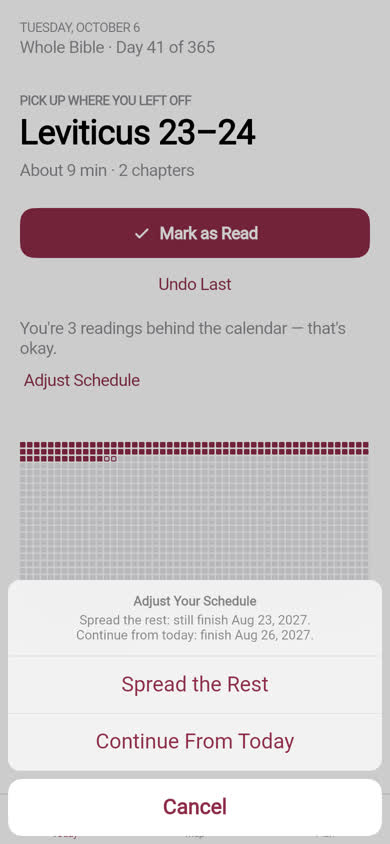